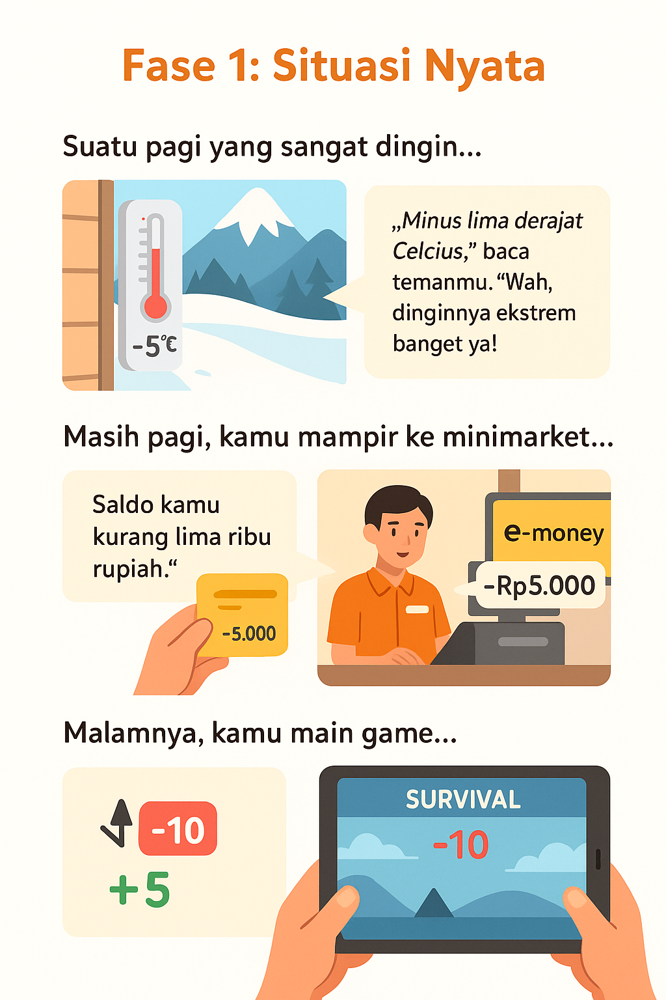
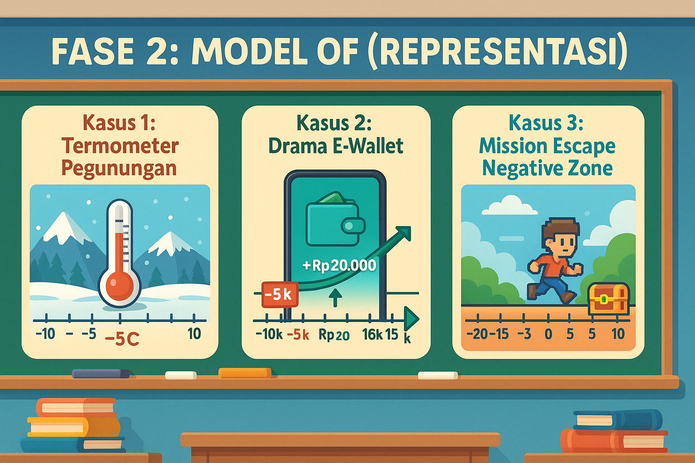
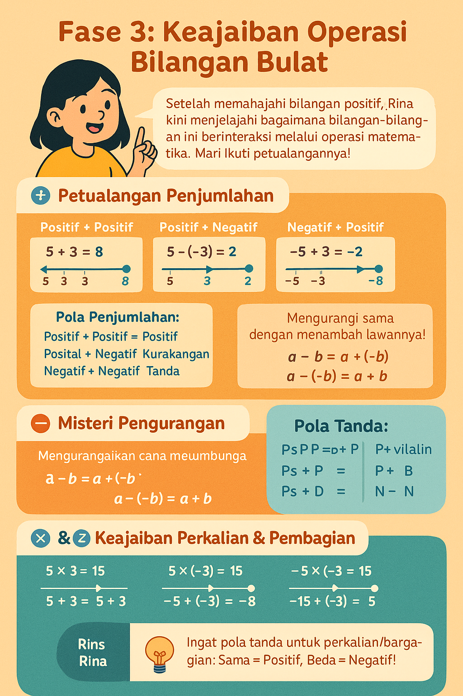
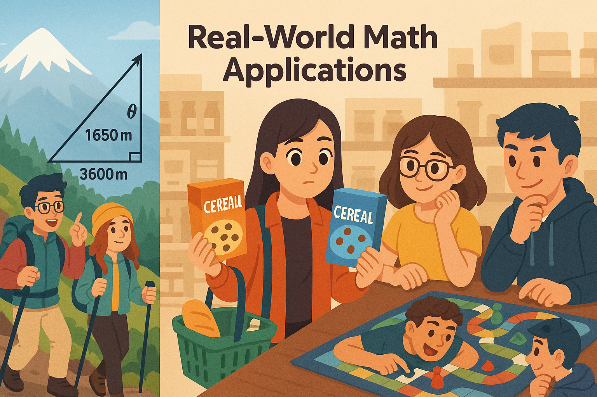
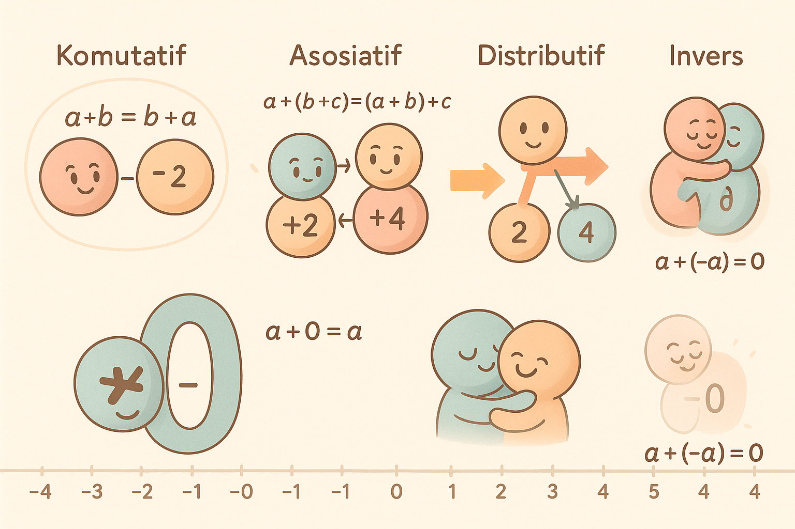
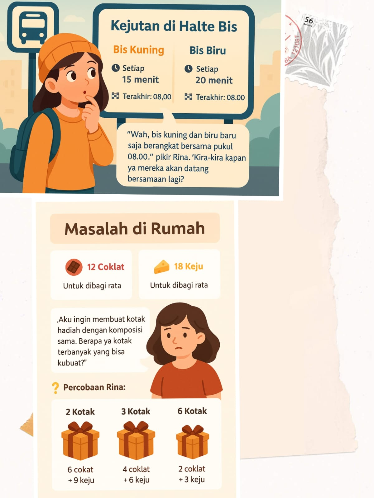

Fase 1: Petualangan Bilangan Bulat
Kisah Sehari dengan Angka Ajaib
Hari itu dimulai seperti biasa, sampai angka-angka misterius mengubah segalanya. Ikuti petualangan Rina dalam satu hari penuh kejutan matematika!
❄️ Kejutan di Pagi Dingin
Pukul 06.00, Rina menggeser tirai jendela kabin liburannya di pegunungan. Matanya langsung tertuju pada termometer digital di dinding:
"-5°C? Kok ada tanda minusnya?"
Ibunya menjelaskan sambil mengembunkan napas: "Itu artinya lima derajat di bawah nol, lebih dingin dari es yang mencair!"
Misteri: "Jadi kalau suhu naik dari -5°C ke 2°C, itu artinya perubahan sebesar...?" Rina menggaruk-garuk kepala sambil menatap grafik suhu di aplikasi cuacanya.
💸 Drama di Minimarket
Siang hari, Rina ingin membeli cokelat panas di minimarket dekat kabin. Saat scan QR Code, kasir tiba-tiba menggeleng:
"Saldomu -Rp5.000. Mau isi ulang dulu?"
Dengan panik, Rina membuka riwayat transaksi:
- 📈 +Rp20.000 (Isi ulang dari Ayah)
- 📉 -Rp25.000 (Makan siang kemarin)
- 🟠 Total: -Rp5.000
Kilas Balik: "Aha! Jadi 20.000 dikurangi 25.000 hasilnya minus 5.000!" Rina tersenyum sambil mengisi ulang saldo. "Sekarang aku paham arti angka negatif di dunia nyata!"
🎮 Pertarungan di Dunia Digital
Malam hari, Rina bermain game survival favoritnya. Tiba-tiba:
Rina melihat leaderboard:
| 🥇 Pemain A | +120 |
| 🧩 Kamu | -5 |
| 😵 Pemain B | -30 |
Strategi: "Jika aku perlu mencapai zona positif (0+), berarti butuh..." Rina mencoret-coret di kertas:
-5 +
X =
1
X = 6 poin!
📚 Pelajaran Hari Ini: Angka negatif ternyata ada di mana-mana! Dari suhu dingin, saldo minus, sampai skor game. Mereka adalah petunjuk saat sesuatu kurang dari titik nol.

Fase 2: Garis Bilangan

🔍 Mengembangkan Model Representasi
"Setelah mengalami situasi nyata—suhu udara di pegunungan, saldo e-wallet minus, dan skor game yang turun—kita mulai melihat pola bilangan yang muncul. Tapi bagaimana menggambarkannya secara sistematis?"
Kasus 1: Termometer Pegunungan
Ingat saat termometer menunjukkan -5°C? Mari buat skala visual:
Titik Beku
Kasus 2: Drama E-Wallet
Dari saldo -Rp5.000 ke Rp15.000, bagaimana perjalanannya?
Kasus 3: Mission Escape Negative Zone
Perjalanan skor game:
Skor awal:
0
Terkena jebakan:
-15
Menemukan harta:
+10
Skor akhir:
-5
Butuh +5 poin untuk mencapai zona positif
💡 Aktivitas Pembelajaran
- Garasi Bilangan: Buat garis bilangan raksasa di lantai kelas dengan lakban warna-warni
- Simulasi Transaksi: Gunakan kartu bilangan (+/-) untuk simulasi transaksi keuangan
- Termometer Kelas: Tempelkan garis bilangan vertikal untuk merekam suhu harian
Fase 3: Keajaiban Operasi Bilangan Bulat
Petualangan Rina dengan Operasi Bilangan
Setelah memahami bilangan positif dan negatif, Rina kini menjelajahi bagaimana bilangan-bilangan ini berinteraksi melalui operasi matematika. Mari ikuti petualangannya!
➕ Petualangan Penjumlahan
Rina menemukan beberapa pola menarik saat menambahkan bilangan:
Positif + Positif
5 + 3 = 8
Positif + Negatif
5 + (-3) = 2
Negatif + Positif
-5 + 3 = -2
Negatif + Negatif
-5 + (-3) = -8
Pola Penjumlahan:
- Positif + Positif = Positif (jumlahkan)
- Positif + Negatif = Kurangkan (ikuti tanda bilangan lebih besar)
- Negatif + Positif = Kurangkan (ikuti tanda bilangan lebih besar)
- Negatif + Negatif = Negatif (jumlahkan)
➖ Misteri Pengurangan
Rina menemukan bahwa pengurangan bisa diubah menjadi penjumlahan:
Positif - Positif
5 - 3 = 5 + (-3) = 2
Positif - Negatif
5 - (-3) = 5 + 3 = 8
Negatif - Positif
-5 - 3 = -5 + (-3) = -8
Negatif - Negatif
-5 - (-3) = -5 + 3 = -2
Rahasia Pengurangan:
"Mengurangi sama dengan menambah lawannya!"
a - b = a + (-b)
a - (-b) = a + b
✖️ & ➗ Keajaiban Perkalian & Pembagian
Rina menemukan pola menarik dalam perkalian dan pembagian:
Perkalian
5 × 3 = 15
5 × (-3) = -15
-5 × 3 = -15
-5 × (-3) = 15
Pembagian
15 ÷ 3 = 5
15 ÷ (-3) = -5
-15 ÷ 3 = -5
-15 ÷ (-3) = 5
Pola Tanda:
- Positif ×/÷ Positif = Positif
- Positif ×/÷ Negatif = Negatif
- Negatif ×/÷ Positif = Negatif
- Negatif ×/÷ Negatif = Positif
"Tanda sama → Hasil positif"
"Tanda beda → Hasil negatif"
📚 Pelajaran Hari Ini: Operasi bilangan bulat memiliki pola yang konsisten!

💡 Tips Rina
"Ingat pola tanda untuk perkalian/pembagian: Sama = Positif, Beda = Negatif!"
Fase 4: Keajaiban Operasi Campuran
Petualangan Rina dengan Operasi Campuran
Setelah memahami operasi dasar bilangan bulat, Rina menemukan tantangan baru ketika operasi penjumlahan, pengurangan, perkalian, dan pembagian bercampur dalam satu permasalahan...
⛰️ Ekspedisi Pendakian
Rina mendaki gunung dengan tim sekolahnya. Mereka mencatat perubahan ketinggian:
Basecamp
0 meter
+500m
Pos 1
-200m
Turun ke lembah
+800m
Pos 2
Masalah: "Berapa total ketinggian yang telah kami capai?" Rina menulis di buku catatannya:
0 + 500 + (-200) + 800 = ?
"Aku bisa hitung berurutan: (0+500)=500, lalu (500-200)=300, terakhir (300+800)=1100 meter"
🛍️ Strategi Belanja Pintar
Rina ingin membeli 3 buku (@Rp25.000) dan 2 pensil (@Rp5.000) dengan diskon Rp10.000:
Perhitungan: "Bagaimana menulis ini dalam satu ekspresi matematika?"
(3 × 25.000) + (2 × 5.000) - 10.000 = ?
"Kerjakan perkalian dulu: 75.000 + 10.000 = 85.000, lalu kurangi diskon: 85.000 - 10.000 = Rp75.000"
Aturan Operasi Campuran: Perkalian/pembagian dikerjakan sebelum penjumlahan/pengurangan (DMAS: Division, Multiplication, Addition, Subtraction)
🎮 Level Baru di Math Quest
Rina memainkan game matematika dengan tantangan operasi campuran:
12 + (-4) × 3 = ?
Strategi Rina: "Aku ingat aturan DMAS! Kerjakan perkalian dulu:"
12 + (-4 × 3) = 12 + (-12) = 0
Jawaban benar: 0
🍪 Pembagian Kue yang Adil
Rina ingin membagi 24 kue untuk 3 temannya, dengan masing-masing mendapat 2 kue coklat:
Ekspresi Matematika: "Bagaimana jika ditulis dalam satu ekspresi?"
(24 ÷ 3) - 2 = 8 - 2 = 6
"Tanda kurung membantu menentukan operasi yang harus dikerjakan lebih dulu!"
📚 Pelajaran Hari Ini: Dalam operasi campuran, kita harus memperhatikan:

Fase 5: Keajaiban Operasi Bilangan
Petualangan Lanjutan Rina dengan Angka
Setelah memahami bilangan negatif, Rina menemukan keajaiban saat angka-angka ini saling berinteraksi. Mari ikuti penemuannya!
🔄 Kejutan di Toko Buku
Rina ingin membeli buku seharga Rp15.000 dan pensil Rp5.000. Saat di kasir terjadi percakapan lucu:
Cara 1:
Buku dulu: +15.000
Lalu pensil: +5.000
Cara 2:
Pensil dulu: +5.000
Lalu buku: +15.000
Penemuan: "Wah, ternyata urutan belanja tidak mengubah total bayar!" Rina mencatat di buku hariannya:
Sifat Komutatif Penjumlahan
🧩 Teka-teki Hadiah Ulang Tahun
Rina mendapat 3 paket hadiah yang masing-masing berisi:
Saat menghitung total, Rina menemukan dua cara:
Cara Kelompok 1:
(2 + 3) coklat = 5
+ (3 + 1) permen = 4
Cara Kelompok 2:
2 coklat + 3 permen = 5
+ 3 coklat + 1 permen = 4
Catatan Rina: "Ternyata cara mengelompokkan hadiah tidak mengubah totalnya!"
Sifat Asosiatif Penjumlahan
🎁 Strategi Berbagi Kue
Rina ingin membagikan kue ke 2 teman. Masing-masing mendapat:
1 kue coklat + 2 kue stroberi
Untuk 2 orang
Rina menghitung dengan dua cara:
Cara 1:
2 × (1 coklat + 2 stroberi)
= 2 × 3 = 6 kue
Cara 2:
(2×1 coklat) + (2×2 stroberi)
= 2 + 4 = 6 kue
a × (b + c) = (a × b) + (a × c)
Sifat Distributif Perkalian
✨ Keajaiban Angka Netral
Di perpustakaan sekolah, Rina menemukan buku catatan matematika lama:
Eksperimen Penjumlahan:
5 + 0 = 5
-3 + 0 = -3
Eksperimen Perkalian:
7 × 1 = 7
-4 × 1 = -4
Penemuan: "Aha! Ada angka spesial yang tidak mengubah nilai saat dioperasikan!" Rina menyimpulkan:
a + 0 = a
Identitas Penjumlahan
a × 1 = a
Identitas Perkalian
🔁 Permainan Kembalikan Angka
Ketika bermain game matematika, Rina menemukan pola menarik:
5 + (-5) = 0
"Lima ditambah lawannya"
3 × (1/3) = 1
"Tiga dikali kebalikannya"
Pola: "Ternyata setiap bilangan punya pasangan khusus yang bisa mengembalikannya ke angka identitas!"
a + (-a) = 0
Invers Penjumlahan
a × (1/a) = 1
Invers Perkalian
Catatan: "Invers perkalian hanya berlaku untuk bilangan bukan nol (a ≠ 0)!"
📚 Pelajaran Hari Ini: Operasi bilangan memiliki 5 sifat ajaib:

📚 Pelajaran Hari Ini: Operasi bilangan memiliki pola ajaib! Urutan dan pengelompokan bisa fleksibel, dan perkalian bisa "disebarkan" seperti membagi hadiah.
Fase 6: Rahasia FPB & KPK

Penemuan Rina tentang Pola Tersembunyi
Hari Senin pagi yang cerah, Rina sedang menunggu di halte bis sekolah ketika dia melihat sesuatu yang menarik...
🚌 Kejutan di Halte Bis
Rina memperhatikan papan jadwal di halte:
Bis Kuning
Setiap 15 menit
Terakhir: 08.00
Bis Biru
Setiap 20 menit
Terakhir: 08.00
"Wah, bis kuning dan biru baru saja berangkat bersama pukul 08.00," pikir Rina. "Kira-kira kapan ya mereka akan datang bersamaan lagi?"
Eksperimen Rina:
Rina mencoba mencatat jadwal kedatangan:
- Bis Kuning: 08:00
- Bis Kuning: 08:15
- Bis Kuning: 08:30
- Bis Kuning: 08:45
- Bis Kuning: 09:00
- Bis Biru: 08:00
- Bis Biru: 08:20
- Bis Biru: 08:40
- Bis Biru: 09:00
Ternyata bertemu lagi pukul 09.00!
(Setelah 60 menit dari keberangkatan terakhir)
🔍 Mencari Pola
"Menulis satu-satu seperti tadi melelahkan. Pasti ada cara lebih cepat!" pikir Rina.
Solusi dengan KPK (Kelipatan Persekutuan Terkecil)
Langkah-langkah:
-
Faktorkan bilangan:
15 = 3 × 5
20 = 2² × 5 -
Ambil semua faktor dengan pangkat tertinggi:
2² × 3 × 5 = 60
KPK(15,20) = 60 menit
Jadi bis akan bertemu lagi setiap 60 menit (1 jam)
Langkah-langkah:
-
Buat tabel pembagian:
15 20 Bagi dengan 15 20 2 15 10 2 15 5 5 3 1 - -
Kalikan semua pembagi:
2 × 2 × 5 × 3 = 60
🏠 Masalah di Rumah
Sesampainya di rumah, Rina ingin membagikan:
🍫 12 Coklat
Untuk dibagi rata
🧀 18 Keju
Untuk dibagi rata
"Aku ingin membuat kotak hadiah dengan komposisi sama. Berapa ya kotak terbanyak yang bisa kubuat?"
Percobaan Rina:
2 Kotak
6 coklat + 9 keju
3 Kotak
4 coklat + 6 keju
6 Kotak
2 coklat + 3 keju
Paling banyak 6 kotak!
(Tidak bisa lebih karena 18÷6=3 dan 12÷6=2)
🔍 Mencari Pola Pembagian
"Pasti ada cara menghitungnya tanpa mencoba satu-satu," tekad Rina.
Solusi dengan FPB (Faktor Persekutuan Terbesar)
Langkah-langkah:
-
Faktorkan bilangan:
12 = 2² × 3
18 = 2 × 3² -
Ambil faktor yang sama dengan pangkat terkecil:
2 × 3 = 6
FPB(12,18) = 6 kotak
Masing-masing berisi 2 coklat dan 3 keju
📚 Catatan Rina:
KPK
Untuk mencari waktu bertemu dalam siklus berulang
Contoh: jadwal, rotasi, pengulangan
FPB
Untuk mencari pembagian maksimal dengan komposisi sama
Contoh: pembagian, pengelompokan, penyederhanaan
Fase 7: Petualangan Berakhir, Ilmu Tetap Abadi
Perjalanan Rina Menguasai Bilangan
Setelah menjelajahi dunia bilangan melalui 4 fase, Rina kini duduk di taman sekolah sambil merefleksikan semua penemuannya...
🗺️ Peta Petualangan Matematika
Fase 1: Dunia Nyata
"Aku belajar bahwa bilangan negatif ada di mana-mana! Dari termometer pegunungan (-5°C), saldo e-wallet (-Rp5.000), sampai skor game (-5 poin)."
Fase 2: Garis Bilangan
"Garis bilangan membantuku memvisualisasikan perubahan suhu dari -5°C ke 2°C sebagai lompatan sebesar 7 satuan ke kanan!"
Fase 3: Menguasai Operasi Bilangan Bulat
"Petualangan operasi bilangan bulat mengungkap pola yang sangat konsisten! Aku menemukan bahwa:
• Penjumlahan/Pengurangan: Bisa divisualisasikan sebagai pergerakan di garis bilangan:
- Positif = langkah ke kanan
- Negatif = langkah ke kiri
- Mengurangi = menambah lawannya
• Perkalian/Pembagian: Mengikuti aturan tanda yang elegan:
- Tanda sama → Hasil positif
- Tanda berbeda → Hasil negatif
- Nol selalu menjadi batas netral
Contoh Penjumlahan:
5 + (-8) = -3
(Dari 5, 8 langkah ke kiri)
-4 - (-6) = 2
(Mengurangi negatif = menambah positif)
Contoh Perkalian:
(-3) × (-5) = 15
(Negatif × Negatif = Positif)
12 ÷ (-4) = -3
(Positif ÷ Negatif = Negatif)
"Yang paling menakjubkan, semua operasi ini saling terkait dan konsisten! Pengurangan bisa diubah menjadi penjumlahan, dan pembagian adalah kebalikan dari perkalian."
Fase 4: Operasi Campuran
"Aku belajar mengurutkan operasi matematika dengan benar! Pertama perkalian/pembagian, baru kemudian penjumlahan/pengurangan. Tanda kurung juga bisa mengubah urutan perhitungan!"
12 + (-4) × 3 = 0
(Perkalian dulu: -4×3=-12, lalu 12+(-12)=0)
Fase 5: Sifat Ajaib
"Ternyata bilangan punya sifat rahasia! Aku bisa menukar urutan (komutatif), mengelompokkan (asosiatif), atau menyebarkan (distributif) operasi tanpa mengubah hasil."
Fase 6: Pola Tersembunyi
"FPB dan KPK seperti kunci rahasia! Aku bisa menghitung jadwal bis bertemu (KPK) atau kotak hadiah maksimal (FPB) dengan faktorisasi prima."
KPK(15,20)
= 60 menit
FPB(12,18)
= 6 kotak
🔑 Kesimpulan Utama
Bilangan Negatif
Mewakili nilai di bawah nol dalam suhu, saldo, atau skor. Bisa dioperasikan dengan garis bilangan.
Sifat Operasi
Penjumlahan dan perkalian punya pola tetap (komutatif, asosiatif, distributif) yang mempermudah perhitungan.
FPB & KPK
FPB untuk pembagian maksimal, KPK untuk pengulangan bersama. Dipecahkan dengan faktorisasi prima.
🚀 Ingin Petualangan Lanjutan?
Eksplorasi lebih dalam dengan tantangan interaktif!
💡 Kata Rina
"Matematika itu seperti petualangan—semakin sering menjelajah, semakin banyak harta karun yang ditemukan!"
Fase 8: Penerapan Kembali
Analisis Data
Menginterpretasikan data suhu harian, fluktuasi harga saham, atau perubahan populasi yang melibatkan bilangan negatif.
Pemrograman Dasar
Menerapkan operasi bilangan bulat dalam algoritma sederhana seperti menghitung selisih waktu atau posisi relatif.
Desain Permainan
Membuat permainan sederhana yang menggunakan konsep bilangan bulat untuk sistem skor atau posisi karakter.
Proses Matematisasi dalam RME
Konteks Nyata
Memulai dengan masalah autentik dari kehidupan sehari-hari yang melibatkan bilangan bulat.
Model of
Siswa mengembangkan model representasi (garis bilangan, diagram) untuk memahami konsep.
Model Through
Menerapkan operasi bilangan bulat (penjumlahan, pengurangan, perkalian, pembagian)
Model with
Menerapkan operasi campuran bilangan bulat (penjumlahan, pengurangan, perkalian, pembagian) dalam masalah kontekstual melalui pemodelan matematis.
Model for
Mengidentifikasi pola dan sifat-sifat operasi bilangan bulat melalui eksplorasi.
Abstraksi
Mengembangkan konsep matematika formal (FPB, KPK) melalui generalisasi.
Penerapan
Mengaplikasikan konsep ke situasi baru yang lebih kompleks.